The record
Over the last ten seasons the Timberwolves are 55–36 in games within a day and a half of a full moon. In the rest of their games they are 373–390. They win 60% of the time under a full moon and 49% the rest of the month.
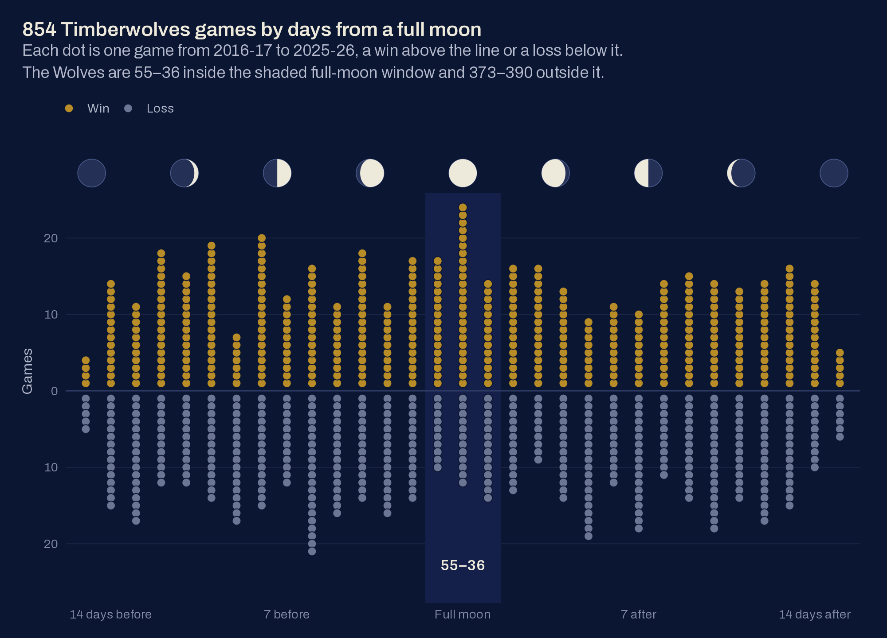
I tested that gap on 12,852 NBA games. For each one I computed the moon's position at tip-off, and I fit a model to compare the Wolves with the other 29 teams.
I read the record as luck. After I account for the opponent and the schedule, the Wolves play 1.7 points better near a full moon, with a 95% interval from −1.2 to +4.6. They went 10–1 in each of two seasons and 35–34 across the other eight. In the fourteen seasons before these ten, they won 39% of their games near a full moon and 39% of the rest.
The games
The sportsdataverse project collects NBA scores from ESPN and publishes one schedule file per season. In the ten seasons from 2016-17 through 2025-26, NBA teams completed 12,852 games, and the Wolves played 854 of them. Those counts include the play-in and the playoffs. The 2026-27 season was under way while I worked, and I kept it out of the models. I pinned the files to one commit of the source repository, so you and I read the same bytes.
I cleaned four things before modeling.
- I dropped the All-Star exhibitions. The NBA fields one-off teams for them, such as Team LeBron, and I found 18 in the files.
- ESPN lists four games from February 2020 with a tip-off about ten hours late, before 11 a.m. Eastern. I moved them back twelve hours, onto the dates the teams played them.
- I treated 203 games as neutral sites with no home-court advantage. Teams played 172 of them in the 2020 Orlando bubble. The rest are NBA Cup games in Las Vegas and games abroad.
- I counted a team's days of rest from its previous game in the same season. Zero is the second night of a back-to-back.
Teams played in 88 lunar months over those ten seasons.
The moon
At each tip-off I used the R package suncalc to compute the moon's phase and its distance from Earth. The package also reports the illuminated fraction, the share of the disc that is lit. I checked suncalc against PyEphem, a high-precision ephemeris. Over these ten years I got a correlation of 0.9998 between their illuminated fractions, plenty for a cycle that takes 29.5 days.
I took one thing from PyEphem itself, the exact instant of each full moon. With suncalc I landed up to 4.4 hours off those instants, and I did not want a window with a hard edge at a day and a half to move by a few hours.
Phase is a position on a circle. The night before a new moon and the night after it are neighbors, yet one has phase 0.98 and the other 0.02. If I gave a regression the phase as a plain number, I would be telling it those two nights are opposites. I used a cosine and a sine instead. With that pair of ordinary numbers you can place any point on a circle.
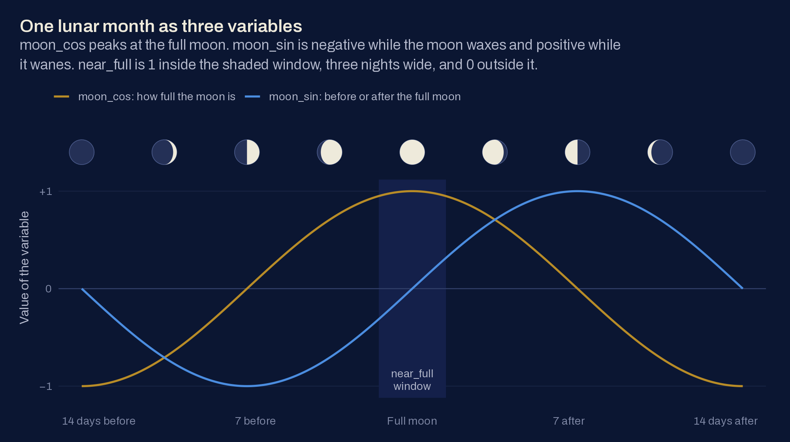
I put four variables into the models.
moon_cos- +1 at full moon and −1 at new moon. It is the illuminated fraction on a new scale, a measure of how full the moon is.
moon_sin- −1 at first quarter and +1 at last quarter. With it I can tell the nights before a full moon from the nights after. With both terms in a model, I can pick up a rhythm of one cycle per month wherever in the month it peaks.
near_full- 1 for a tip-off within 1.5 days of the full-moon instant, the three nights the moon looks full, and 0 for the rest. I set that width in the first script, before I had any results.
moon_dist- The moon's distance from Earth in thousands of kilometers. Distance follows its own cycle of 27.6 days, and a full moon at the near end of it is a supermoon. It is the roughest of suncalc's outputs, with a correlation of 0.975 against PyEphem.
In my first drafts I used illuminated fraction and days from the full moon as two variables. Their correlation was −0.99. I had entered one variable twice, and I could not split an effect between two copies of it.
The model
A straight comparison of full-moon games with the rest is unfair. The Wolves played 56% of their full-moon games at home and 49% of the rest. In 2021-22, when they went 10–1 under full moons, they played 9 of those 11 games in Minneapolis.
I start by predicting each team's score in each game from things that have nothing to do with the moon.
- the season, since league scoring rose about 10 points per team over the decade
- home court, with its own estimate for each season
- days of rest for both teams
- play-in and playoff games
- overtime periods
- day of the week
I also let the model estimate how good each offense and each defense was in each season, and which teams ran hot or cold in a given month. I added two more terms, one for the drift in league scoring from month to month and one for the pace of each game. In lme4 these are all random intercepts.
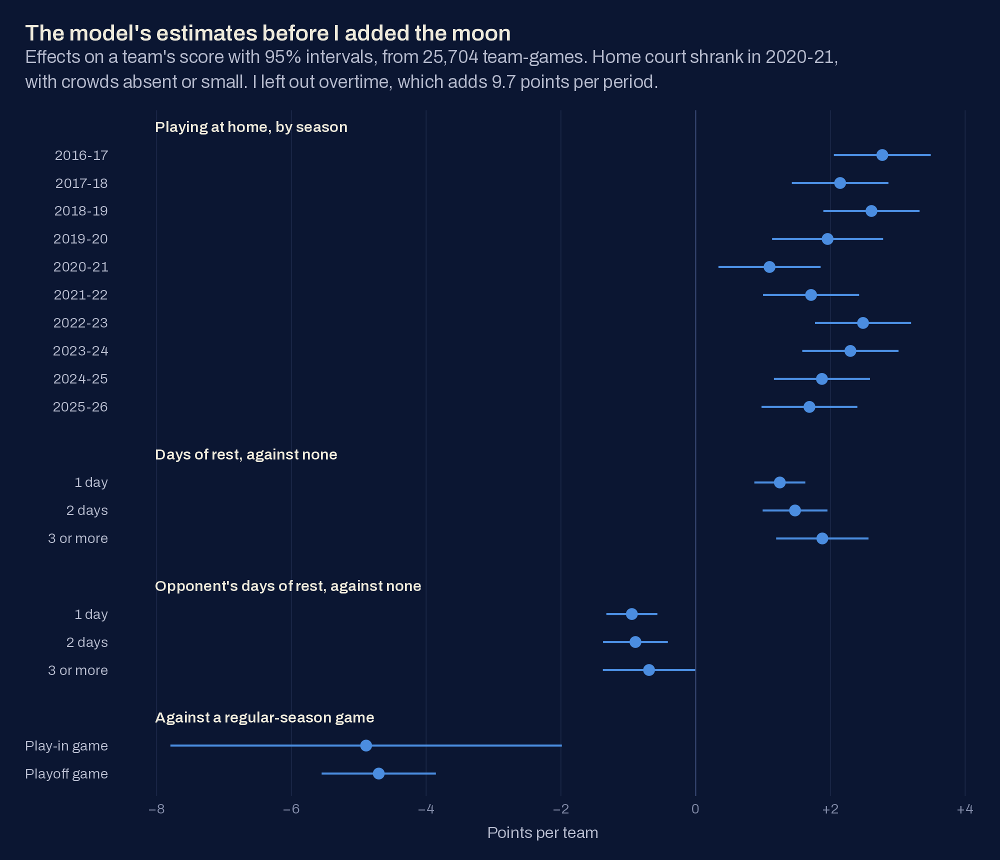
Before I add the moon, the estimates look like basketball. Home court is worth about 2 points and fell to 1.1 in 2020-21. A team with one day of rest scores 1.2 more than a team on the second night of a back-to-back. Teams score 4.7 fewer points in a playoff game, and 9.7 more for each overtime period.
Then I add each moon variable three times. The first term is for the whole league. The other two are for the Wolves, one for the points they score and one for the points they allow. I include the league term because the other 29 teams played under the same moon. If scoring dips across the league on full-moon nights, the Wolves get no credit for it.
points ~ moon + moon:is_wolves + moon:vs_wolves
+ is_wolves + vs_wolves + season + season:home_court
+ rest + opp_rest + game_type + overtimes + dow
+ (1 | season_month) + (1 | team_season) + (1 | opp_season)
+ (1 | team_month) + (1 | opp_month) + (1 | game_id)The model has 25,704 rows, two per game, one for each team's score.
The result
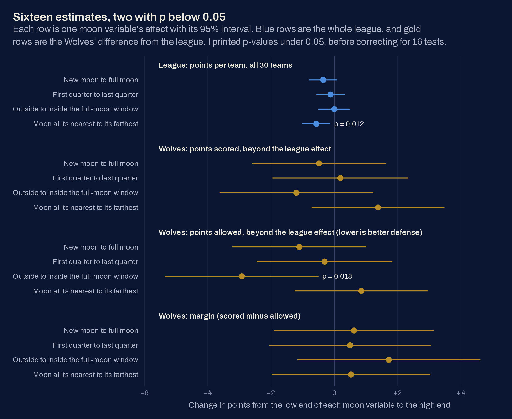
Show these numbers as a table
| Who | Moon variable, low end to high end | Change in points | 95% interval | p | p after Holm |
|---|---|---|---|---|---|
| League, per team | New moon to full moon | −0.35 | −0.80 to +0.09 | 0.12 | 0.35 |
| League, per team | First quarter to last quarter | −0.12 | −0.56 to +0.33 | 0.60 | 1.00 |
| League, per team | Outside to inside the full-moon window | −0.01 | −0.51 to +0.50 | 0.98 | 1.00 |
| League, per team | Moon at its nearest to its farthest | −0.57 | −1.01 to −0.12 | 0.012 | 0.050 |
| Wolves, points scored | New moon to full moon | −0.48 | −2.60 to +1.63 | 0.65 | 1.00 |
| Wolves, points scored | First quarter to last quarter | +0.19 | −1.95 to +2.34 | 0.86 | 1.00 |
| Wolves, points scored | Outside to inside the full-moon window | −1.20 | −3.62 to +1.23 | 0.33 | 1.00 |
| Wolves, points scored | Moon at its nearest to its farthest | +1.38 | −0.72 to +3.48 | 0.20 | 0.79 |
| Wolves, points allowed | New moon to full moon | −1.11 | −3.22 to +1.01 | 0.31 | 0.92 |
| Wolves, points allowed | First quarter to last quarter | −0.31 | −2.45 to +1.84 | 0.78 | 0.92 |
| Wolves, points allowed | Outside to inside the full-moon window | −2.92 | −5.35 to −0.49 | 0.018 | 0.073 |
| Wolves, points allowed | Moon at its nearest to its farthest | +0.85 | −1.25 to +2.95 | 0.43 | 0.92 |
| Wolves, margin | New moon to full moon | +0.62 | −1.90 to +3.14 | 0.63 | 1.00 |
| Wolves, margin | First quarter to last quarter | +0.50 | −2.06 to +3.05 | 0.70 | 1.00 |
| Wolves, margin | Outside to inside the full-moon window | +1.72 | −1.17 to +4.61 | 0.24 | 0.97 |
| Wolves, margin | Moon at its nearest to its farthest | +0.53 | −1.98 to +3.03 | 0.68 | 1.00 |
I estimated sixteen effects. Each of the four moon variables has one for the league, one for the Wolves' scoring, one for their points allowed and one for their margin.
I see no moon effect on the Wolves' scoring. From new moon to full, their scoring changes by −0.5 points relative to the league, with an interval from −2.6 to +1.6.
The 55–36 comes from defense. Inside the full-moon window, opponents score 2.9 fewer points against the Wolves than I would predict without the moon (p = 0.018).
Scoring and defense together make the margin. The Wolves are 1.7 points better inside the window, with an interval from −1.2 to +4.6. From new moon to full moon, the smooth measure, their edge is +0.6 points (−1.9 to +3.1).
The other small p-value has nothing to do with Minnesota. Across the league, teams score 0.6 fewer points with the moon at its farthest than with it at its nearest (p = 0.012).
Two of sixteen estimates under 0.05 is about what I would expect from luck. With no moon effect I would average 0.8 of them and see two or more about one time in five. I applied Holm's correction within each group of four, and those two p-values became 0.050 and 0.073. Testing all eight Wolves scoring and defense terms at once, I get p = 0.48. For the four league-wide terms I get p = 0.045, which is the distance effect again.
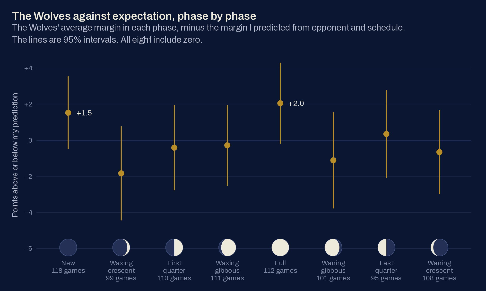
Split the month into its eight named phases and the Wolves are 2.0 points better than I predicted at the full moon and 1.5 better at the new moon. If moonlight were the cause, I would expect those two phases at opposite ends.
Fake moons
I got each p-value above from the model's error bars, and I had reasons to doubt them. Teams run hot and cold for weeks. If a variable rises and falls once a month, it can line up with those streaks by accident and look like an effect.
I invented moons to check. A fake moon is a cycle of some other length, from 15 to 60 days. I made 166 of them and spaced their lengths far enough apart to make each a separate test. None of them exists, so any effect I estimate for one is noise, and from the whole set I can see how much noise to expect.
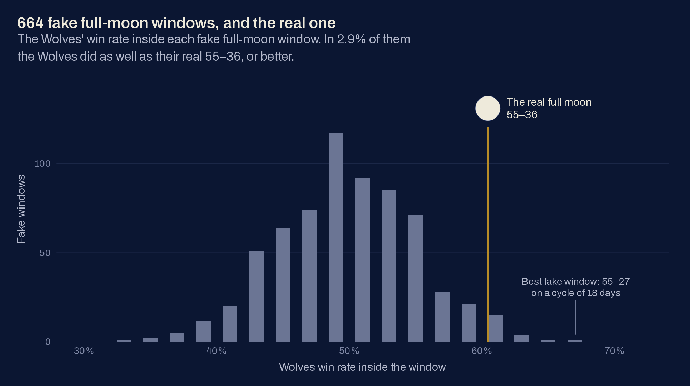
I started with the raw record a fan would quote. On each fake cycle I marked a window covering 10% of the cycle, to match the full-moon window's share of a lunar month. I placed it at four points in the cycle and counted the Wolves' wins and losses inside. In 2.9% of the 664 fake windows, the Wolves did as well as 55–36 or better. Their best came on a cycle of 18 days, where they went 55–27.
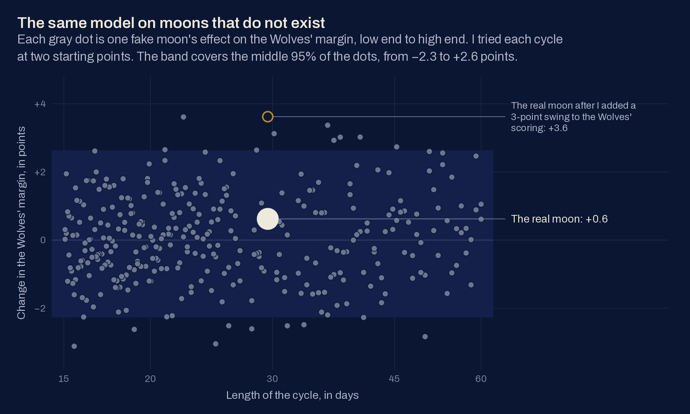
I also ran each fake moon through the same model as the real one, twice, starting at two different points in its cycle. For the Wolves' margin, the fake estimates have a standard deviation of 0.64 points and the model's standard error is 0.64, so the error bars are the right size. The real moon's estimate sits in the middle of the cloud, and 64% of the fake estimates are farther from zero.
The error bars on one term are too narrow. For points allowed, the fake estimates spread 18% wider than the model's standard error from new moon to full, and 7% wider for the window, so the 0.018 above is too small. Against the fake windows I get 0.027.
I checked that I could find an effect this way. I added a 3-point swing to the Wolves' scores, timed to the real moon, and ran it again. My estimate for margin rose to +3.6, beyond all but one of the 332 fake estimates.
Other seasons
If the Wolves had a full-moon effect, I would expect it in other seasons too. The source has fourteen earlier seasons, 2002-03 through 2015-16, that I kept out of the analysis above. Teams played 18,078 games in them, 1,156 involving the Wolves. For the six oldest seasons ESPN recorded tip-off in the home arena's local time, and I corrected those. Then I ran the same model without changes and looked first at the two estimates with p under 0.05.
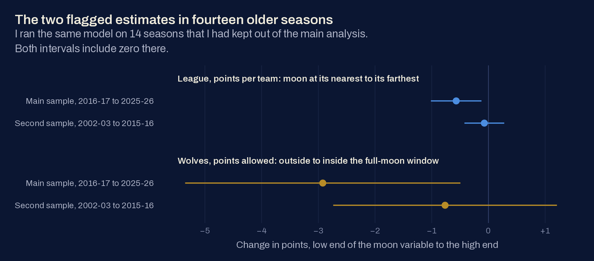
I did not find the league-wide distance effect again. In the second sample it is −0.1 points (−0.4 to +0.3). For the Wolves' defense inside the window I got the same direction at a fraction of the size. Opponents scored 0.8 fewer points, 26% of the first estimate, with an interval from −2.7 to +1.2.
The gap in the raw record is gone. In those fourteen seasons the Wolves went 45–70 near a full moon and 405–636 otherwise, which is 39% and 39%. For their margin inside the window I estimate +0.9 points (−1.3 to +3.1).
I also estimated each season on its own. In the chart I put the fourteen earlier seasons above the ten main ones.
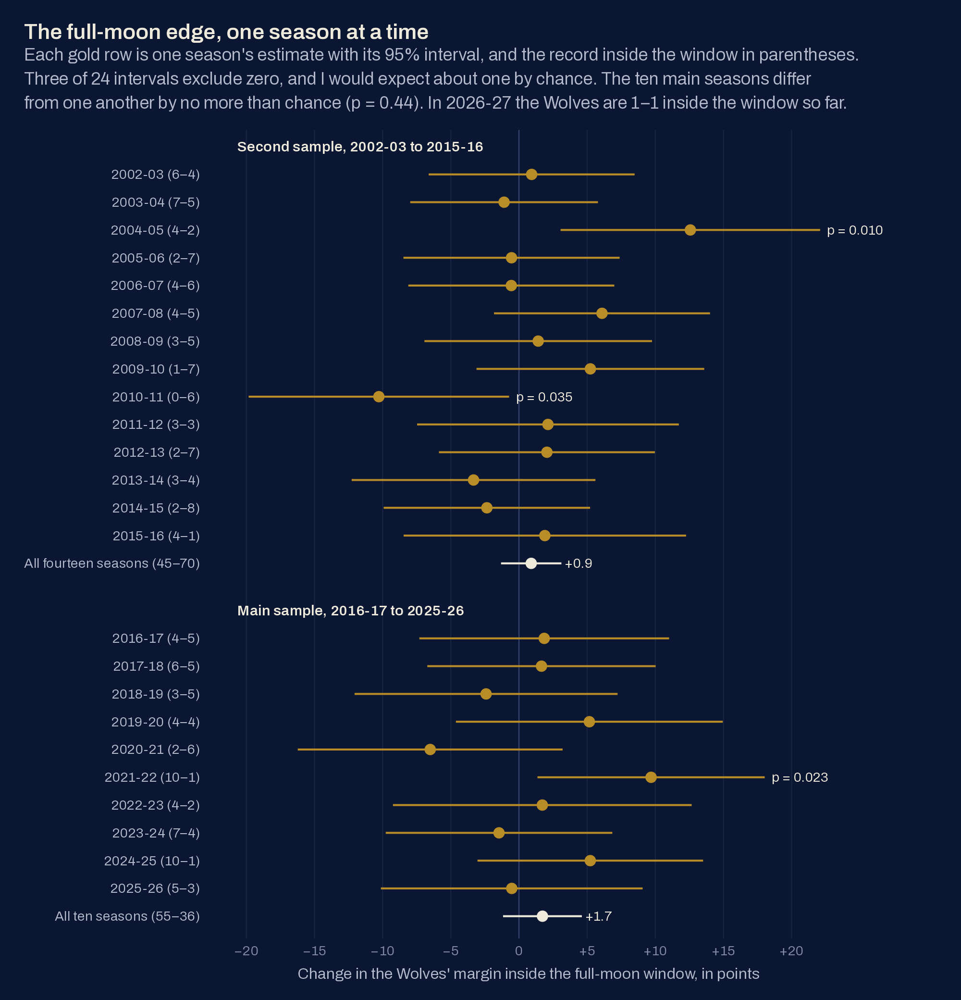
Among the ten main seasons my estimate runs from −6.5 points in 2020-21 to +9.7 in 2021-22. The Wolves play about nine full-moon games a season, so each estimate is rough. Three of the 24 intervals exclude zero, two above and one below. By chance I would see about one. I tested whether the seasons differ from one another and got p = 0.44 for the ten and p = 0.24 for the earlier fourteen. You get swings this large from samples of nine games.
You can see the same thing in the record. The Wolves went 10–1 inside the window in 2021-22 and again in 2024-25. In the other eight seasons they are 35–34.
The recent seasons look best. Since 2021-22 the Wolves are 36–11 near a full moon. I found that by slicing the data after I had seen it, so I cannot count it as evidence, but it is the stat I would bring to a bar.
I kept the 2026-27 season out of the models. Through November 15 the Wolves are 9–4. One full moon has passed, and they went 1–1 in its window. The next full moon is on November 24.
Other teams
If the moon affected the Wolves' play, they would stand out from the other 29 teams. I ran the same breakdown for all 30.
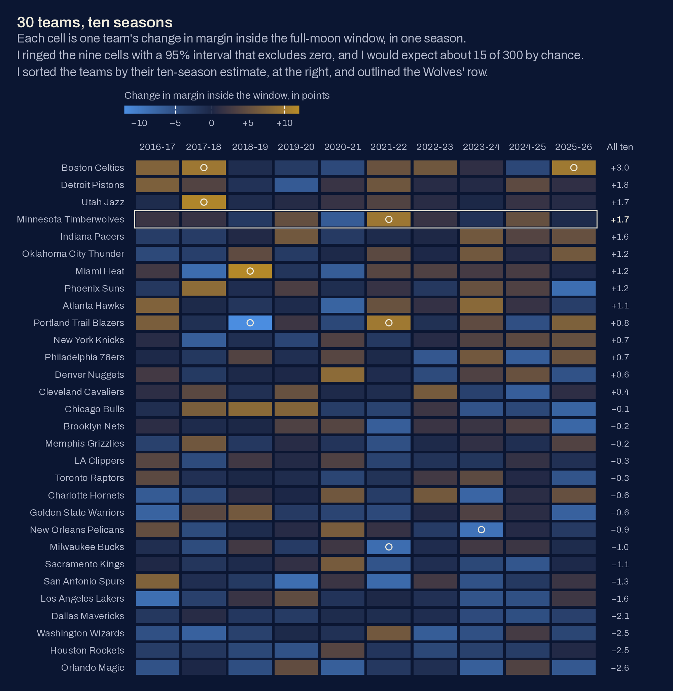
Each cell is one team in one season. I sorted the teams by their ten-season estimate. The Wolves are 4th of 30, and the Celtics are first at +3.0 points. Of 300 cells, 9 have an interval that excludes zero, and I would get about 15 by chance.
You cannot predict a team's number in one season from the season before. The correlation between consecutive seasons is −0.10 over 270 pairs. I also fit a model with a separate full-moon effect for each team in each season, and I estimate the spread of those effects at zero (p = 1.00).
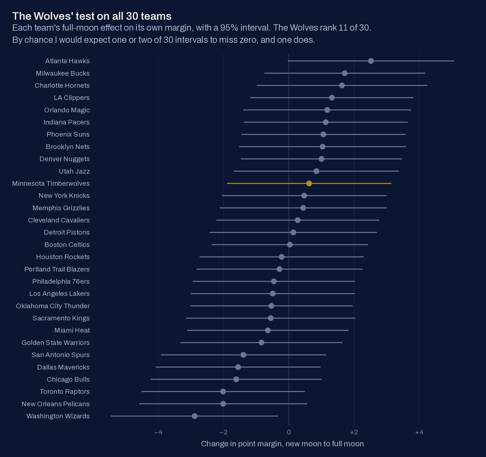
Pooling all ten seasons and measuring the moon from new to full, I put each of the 30 teams through the Wolves' test. The Wolves rank 11th of 30. The largest effect belongs to the Wizards, whose margin moves −2.9 points from new moon to full (p = 0.027), and I have yet to hear a theory about them. In one more model I gave each team its own moon effect. I estimate the spread across teams at 0.1 points, which I cannot tell from zero (p = 0.99).
Pick a team
You can explore the breakdown for all thirty teams in this chart. Pick a team, then switch between its margin and the two parts of it, points scored and points allowed. You can measure the moon by the window or from new moon to full. Each number is that team's change beyond the league's own.
You need JavaScript for this chart. You can find the same numbers in the two files under it.
Other models
I did not want the result to depend on one way of building the model. I refit it six other ways: the regular season alone, without the two pandemic seasons, the recent seasons alone, points per 48 minutes in place of an overtime term, and two simpler structures.
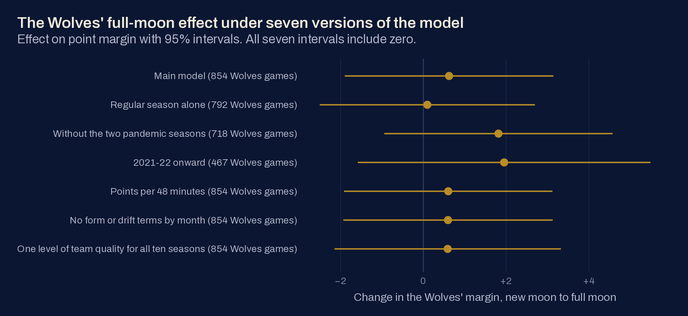
The Wolves' margin swing ranges from +0.1 to +2.0 across the seven versions, and all seven intervals include zero.
The width of the window is my choice too. I tried five widths, from half a day to three days on either side of the full moon, and my margin estimate ran from +1.3 to +2.6 points. Of the five, the two-day window alone has an interval that excludes zero. I had set a day and a half before I saw any of these numbers, and you can check them in results/windows.csv.
I also tried a simpler analysis on the Wolves' own 854 games. I fit all sixteen combinations of the four moon variables to each outcome and ranked them by AIC. For points scored and for margin, the best model has no moon variable. The best model for points allowed adds the full-moon window and nothing else, and so does the best model for wins. On its own the window has a p-value of 0.026 for points allowed and 0.048 for wins, or 0.10 and 0.19 after Holm's correction for the four variables.
The verdict
With ten seasons I would catch a 3.6-point swing in the Wolves' margin between new and full moon four times in five. Home court is worth about 2 points. A moon effect the size of home court could exist, and I would miss it more often than I caught it.
The window estimate of 1.7 points could be real too. To confirm an edge that size at the usual standard, I would need about 57 seasons of games in all, and the NBA will not have played them until around 2073.
After all of these checks I read the 55–36 as luck. The Wolves built it in two seasons, and they show no gap in wins over the fourteen seasons before. I cannot rule out an edge of a point or so on defense, and 24 seasons are too few to confirm one.
Run it yourself
git clone https://github.com/elkronos/the_timberwerewolves
cd the_timberwerewolves
Rscript run_all.RYou need R with the packages lme4, Matrix, suncalc, ggplot2, ragg and jsonlite. The script downloads 25 season files, fits the models, redraws the figures and rebuilds this page in six to ten minutes. It fills in each result on this page from its own output. I built this copy with R 4.5.3 and lme4 2.0.6 from data commit 4890b4e.
Changes from earlier drafts
In my first drafts I tested the moon by sliding the lunar calendar forward a random number of days and refitting. I removed that test. A cosine slid by any amount is a mix of the same cosine and sine, so I got a p-value that followed where in the month the effect peaked, whatever its size. In a check I made the effect twenty times larger, and the p-value changed by less than 0.01. I replaced that test with the fake moons.
In those drafts I also gave each team one level of quality for all ten seasons and measured the Wolves' scoring alone. Now I let team quality change each season and measure defense too. You can read the full list in the changelog.